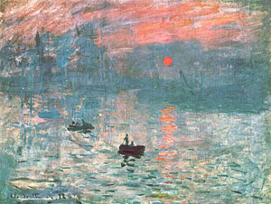

| Ιμπρεσιονισμός  Ο ιμπρεσιονισμός εμφανίζεται το 1874 στη Δυτική Ευρώπη και αποτελεί σταθμό στην ιστορία της ζωγραφικής, γιατί είναι το πρώτο θαρραλέο ρεύμα που προσπαθεί να σπάσει τα δεσμά της στεγνής ρεαλιστικής απεικόνισης. Δεν ενδιαφέρεται για το ακριβές και λεπτομερές σχέδιο και το θέμα είναι συνήθως απλό (τοπίο, νεκρή φύση). Τα χρώματα, που χρησιμοποιούνται, παρατίθενται το ένα δίπλα στο άλλο δίχως αναμείξεις, ενώ οι πινελιές του καλλιτέχνη είναι ευδιάκριτες. Ενδιαφέρεται ιδιαίτερα για τα παιχνίδια του φωτός και την εντύπωση (impression) που προκαλεί το θέμα. |
||